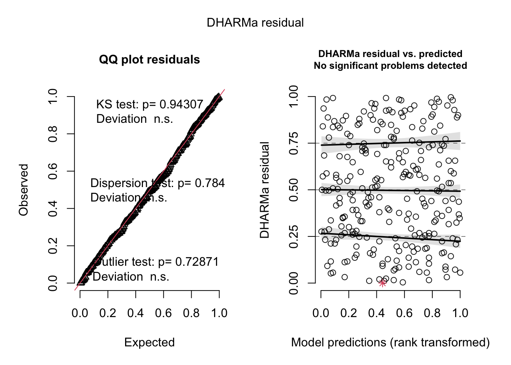

F-statistic: 338.4 on 62 and 1 DF, p-value: 0.0000
Code
flextable::as_flextable(soil_lm) %>%set_formatter(# special function to represent p < 0.001values =list("p.value"=function(x){ z <- scales::label_pvalue()(x) z[!is.finite(x)] <-"" z }) )
# A tibble: 10 3
weight toxicity color
<dbl> <dbl> <fct>
1 3.08 7.00 red
2 3.2 7.37 red
3 2.96 7.30 blue
4 3.2 7.34 red
5 2.78 7.33 blue
6 3.08 6.88 red
7 2.87 7.20 blue
8 2.92 6.61 blue
9 2.82 6.70 blue
10 3 7.26 red
model
Code
model1 <-lm(toxicity ~ weight + color, data = df)model2 <-lm(toxicity ~ weight * color, data = df)simulateResiduals(model1, plot =TRUE)
Object of Class DHARMa with simulated residuals based on 250 simulations with refit = FALSE . See ?DHARMa::simulateResiduals for help.
Scaled residual values: 0.412 0.472 0.344 0.444 0.92 0.212 0.54 0.004 0.076 0.956 0.4 0.888 0.296 0.612 0.808 0.5 0.444 0 0.424 0.852 ...
Code
simulateResiduals(model2, plot =TRUE)

Object of Class DHARMa with simulated residuals based on 250 simulations with refit = FALSE . See ?DHARMa::simulateResiduals for help.
Scaled residual values: 0.428 0.616 0.348 0.56 0.896 0.212 0.516 0.004 0.048 0.94 0.524 0.88 0.304 0.568 0.864 0.42 0.468 0.004 0.58 0.736 ...
Code
check_model(model2)
Code
testOutliers(model2)
DHARMa outlier test based on exact binomial test with approximate
expectations
data: model2
outliers at both margin(s) = 1, observations = 87, p-value = 0.5014
alternative hypothesis: true probability of success is not equal to 0.007968127
95 percent confidence interval:
0.0002909669 0.0623843203
sample estimates:
frequency of outliers (expected: 0.00796812749003984 )
0.01149425
diagnostics
Code
par(mfrow =c(2, 2))plot(model1)
Code
plot(model2)
model summary
Code
summary(model1)
Call:
lm(formula = toxicity ~ weight + color, data = df)
Residuals:
Min 1Q Median 3Q Max
-0.69729 -0.13129 -0.01201 0.15783 0.56205
Coefficients:
Estimate Std. Error t value Pr(>|t|)
(Intercept) -0.48954 0.91692 -0.534 0.595
weight 2.45758 0.29881 8.224 2.32e-12 ***
colorblue 0.62269 0.07556 8.241 2.15e-12 ***
colorgreen 2.11904 0.06823 31.056 < 2e-16 ***
---
Signif. codes: 0 '***' 0.001 '**' 0.01 '*' 0.05 '.' 0.1 ' ' 1
Residual standard error: 0.2429 on 83 degrees of freedom
Multiple R-squared: 0.9306, Adjusted R-squared: 0.9281
F-statistic: 371 on 3 and 83 DF, p-value: < 2.2e-16
Code
summary(model2)
Call:
lm(formula = toxicity ~ weight * color, data = df)
Residuals:
Min 1Q Median 3Q Max
-0.69784 -0.11377 0.00261 0.12840 0.64018
Coefficients:
Estimate Std. Error t value Pr(>|t|)
(Intercept) 1.12675 1.52961 0.737 0.46348
weight 1.93021 0.49888 3.869 0.00022 ***
colorblue 0.05147 2.05984 0.025 0.98013
colorgreen -2.95838 2.26526 -1.306 0.19526
weight:colorblue 0.16966 0.68677 0.247 0.80550
weight:colorgreen 1.68034 0.74728 2.249 0.02725 *
---
Signif. codes: 0 '***' 0.001 '**' 0.01 '*' 0.05 '.' 0.1 ' ' 1
Residual standard error: 0.2372 on 81 degrees of freedom
Multiple R-squared: 0.9354, Adjusted R-squared: 0.9314
F-statistic: 234.5 on 5 and 81 DF, p-value: < 2.2e-16